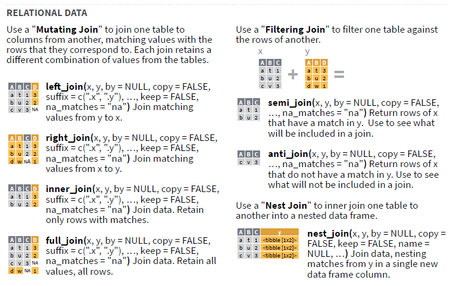

Vi sammenstiller data fra mange kilder. Vanligvis fordi vi har to sett med data vi er interessert i, men de er fordelt på to datasett. Trikset da blir å finne minst en bit med informasjon de to datasettene deler, slik at vi kan identifisere hvilke observasjoner i datasett x som korresponderer med observasjoner i datasett y.
Å slå sammen datasett varierer i vanskelighetsgrad fra enkelt til diabolsk. Vi starter med noen enkle eksempler. Deretter diskuterer vi noen av de kompliserende faktorene.
dplyr har en serie med funksjoner som slår sammen datasett. De heter noe med *_join(): left_join(), full_join(), etc. Posits jukselapp gjør igjen en formidabel jobb med å enkelt illustrere forskjellen mellom dem, så jeg stjeler låner et bilde fra dem:

CC BY SA Posit Software
left_join() og right_join() er de vi bruker mest, og vi trenger strengt tatt bare én av dem. Fordi left_join(x, y) == right_join(y, x). Det handler bare om retninga du slår sammen (merge/join). Vanligvis starter vi med det datasettet som inneholder mest informasjon (x) og slår sammen et annet datasett (y) oppå dette igjen. Det er ikke sikkert vi trenger alle radene fra y, derfor gjør vi en left_join(x, y) som sørger for at alle rader fra x bevares, pluss alle rader fra y som korresponderer til rader i x.
La oss se på noen enkle joins. Først genererer jeg et noen datasett som vi kan bruke. Datasetta inneholder navn på diverse firmaer, og detaljer rundt disse firmaene.
# Laster inn en pakke som gir oss tilfeldige navn.library(randomNames)library(tidyverse)
# Definer et frø så vi får samme tilfeldige prosess hver gang.set.seed(123)# streng med firmasuffiksersuffikser <-c("AS", "og sønner", "AB", "firma", "rørleggere", "elektrikere", "blikkenslager", "ABB", "og co")# Hvor mange firma vi skal generereantall <-20# La et datasett som inneholder firmanavn, ved å kombinere tilfeldige etternavn# og suffiksene vi definerte over.firmanavn <-tibble(navn =randomNames(antall, which.names ="last", ethnicity =5),suffiks =sample(suffikser, antall, replace =TRUE)) %>%transmute(firma =paste(navn, suffiks))firmanavn %>%head()
# A tibble: 6 × 1
firma
<chr>
1 Tanksley og co
2 Jones blikkenslager
3 Lawrence AB
4 Riffel ABB
5 Patterson og co
6 Warriner AB
# Et datasett med inntjening i kr.inntjening <- firmanavn %>%mutate(inntekt =round(runif(antall, 0, 1000000)))inntjening %>%head()
# A tibble: 6 × 2
firma inntekt
<chr> <dbl>
1 Tanksley og co 76691
2 Jones blikkenslager 245724
3 Lawrence AB 732135
4 Riffel ABB 847453
5 Patterson og co 497527
6 Warriner AB 387909
# Et annet datasett med antall ansatte.ansatte <- firmanavn %>%mutate(antall =round(abs(rnorm(antall, 1, 15))))ansatte %>%head()
# A tibble: 6 × 2
firma antall
<chr> <dbl>
1 Tanksley og co 11
2 Jones blikkenslager 8
3 Lawrence AB 13
4 Riffel ABB 11
5 Patterson og co 6
6 Warriner AB 2
Sjølve sammenslåinga er enkel: vi navngir de to datasetta som skal inngå i sammenslåinga, og hvilken eller hvilke variabler som skal inngå i sammenslåinga.
firmaoversikt <-left_join(inntjening, ansatte, by ="firma")firmaoversikt %>%head()
# A tibble: 6 × 3
firma inntekt antall
<chr> <dbl> <dbl>
1 Tanksley og co 76691 11
2 Jones blikkenslager 245724 8
3 Lawrence AB 732135 13
4 Riffel ABB 847453 11
5 Patterson og co 497527 6
6 Warriner AB 387909 2
Hvis du skal matche på variabler som ikke heter det samme i begge datasetta kan du enten
endre navnet på en av variablene på forhånd.
oppgit en navngitt vektor i by.
La oss se et eksempel på det siste alternativet, for det bruker vi ofte.
# endrer navnet på et av datasettas firma-kolonne.names(inntjening) <-c("firmanavn", "grunker")# Nå har dette datasettet nytt navn colnames(inntjening)
# A tibble: 20 × 3
firmanavn grunker antall
<chr> <dbl> <dbl>
1 Tanksley og co 76691 11
2 Jones blikkenslager 245724 8
3 Lawrence AB 732135 13
4 Riffel ABB 847453 11
5 Patterson og co 497527 6
6 Warriner AB 387909 2
7 Atkinson blikkenslager 246449 4
8 Sherrill AB 111096 6
9 Adelman blikkenslager 389994 8
10 Bates elektrikere 571935 0
11 Meyer rørleggere 216893 3
12 Kidd rørleggere 444768 20
13 Payeur ABB 217991 6
14 Eckhardt AB 502300 6
15 Adamson og sønner 353905 0
16 Sunshine og sønner 649985 7
17 Amos elektrikere 374714 4
18 Waite firma 355445 28
19 Brue AS 533688 2
20 Timmons elektrikere 740334 19
Vi kan også oppgi flere variabler å matche på ved å simpelthen oppgi flere variabler i by-argumentet: by = c("firmanavn", "avdeling", "fylke"). Dette funker også som en navngitt vektor dersom man har ulike kolonnenavn i datasetta: `by = c(“firmanavn” = “navn”, “avdeling” = “branch”, “fylke” = “fylke”)
10.1 Kompliserende faktorer
Det er ikke alltid like enkelt å slå sammen datasett.
10.1.1 En til mange
Noen ganger har vi en en-til-mange sammenslåing. I dette eksemplet har datX en kolonne colA med bokstaver fra a til d. De forekommer bare en gang hver. Når vi slår den sammen med datY, hvor det er tre rader per bokstav i colA, blir det sammenslåtte datasettet å brette ut colA slik vi at får med oss alle verdiene i datY hvor colA har like elementer i begge datasetta.
# Genererer to datasett fulle av tall og bokstaver.datX <-tibble(colA = letters[1:5],colB =seq(1:5))datY <-tibble(colA =rep(letters[1:10], each =3), colC =c(10:39))datX
# A tibble: 5 × 2
colA colB
<chr> <int>
1 a 1
2 b 2
3 c 3
4 d 4
5 e 5
datY
# A tibble: 30 × 2
colA colC
<chr> <int>
1 a 10
2 a 11
3 a 12
4 b 13
5 b 14
6 b 15
7 c 16
8 c 17
9 c 18
10 d 19
# … with 20 more rows
# Slår dem sammen via colA.datX %>%left_join(datY, by ="colA")
# A tibble: 15 × 3
colA colB colC
<chr> <int> <int>
1 a 1 10
2 a 1 11
3 a 1 12
4 b 2 13
5 b 2 14
6 b 2 15
7 c 3 16
8 c 3 17
9 c 3 18
10 d 4 19
11 d 4 20
12 d 4 21
13 e 5 22
14 e 5 23
15 e 5 24
Det observante leser kan observere at vi i dette tilfellet kunne tatt sammenslåinga motsatt vei ved å enten bruke en right_join() eller sette datyY som x og vice versa. Da ville vi lagt på datY sine verdier på datX istedenfor motsatt, og vi ville ikke tenkt å tenke på utbrettinga av datX. Noen ganger er det likevel denne veien vi vil gå, f.eks. hvis vi virkelig bare er interessert i observasjoner fra x. Her, f.eks., tar vi ikke med alle bokstavene som forekommer i y. Hadde vi valgt å slå sammen y på x ville vi måtte fjerne disse manuelt seinere. Og det kunne vi fint gjort. Igjen, det er mange veier til Rom.
10.1.2 Partial match
Det er ofte enklest å slå sammen basert på et tall, som ID. Dette fordi vi i større grad forventer at ID-er er 1) unike og 2) konsekvente på tvers av datasetta. Men noen ganger ender vi opp med å matche basert på navn. For eksempel når vi har ei liste med barnehagenavn som vi vil bruke til å matche informasjon fra to ulike tabeller. En utfordring som fort oppstår da er at navna ikke er 100 % identisk i de to datasetta. Eksempelvis vil noen skrive barnehagenavnet med “barnehage” i navnet, noen skriver barnehage med stor B, andre med liten, noen feilstaver kanskje barnehagenavnet, eller kanskje barnehagen har endra navn siden det ene datasettet blei oppretta. Det er mange grunner til inkonsekvens. Resultatet er det samme: vi må håndtere det på et vis.
To ulike tilnærminger kan brukes:
endre ett eller begge datasetta programmatisk slik at de blir likere hverandre. Kanskje vi finner ut at “barnehage” ikke er nyttig i et barnehagenavn, så vi fjerner alle forekomster av det.
fuzzy join: ta ibruk funksjoner som lar oss slå sammen datasett basert på ueksakte matcher. En slik pakke er fuzzy_join().
(Lista er ikke uttømmende. Det er så klart mange andre mulige måter å gjøre dette på.)
Begge tilnærmingene involverer å bruke regex. I arbeidet med barnehagekapasitet har jeg brukt slike matcher en del. Der gikk jeg for tilnærming 1. Det er klare rom for forbedring her, og jeg tror det ville involvert mer regex.
10.2 Den allsidige join
Hovedpoenget med joins er å slå sammen datasett fra ulike kilder. I min kode vil dere se at jeg innimellom har funnet andre bruksområder for dem. I enkelte tilfeller finnes det sikkert andre måter å løse problemet på, men den første løsninga jeg fant som virka, var å bruke join. Og hvis det funker, er det greit. La oss se et eksempel: Vi har et datasett som viser antall personer i hver alder (fra 0 til 119). Vi har lyst å gjøre om kontinuerlig alder til alderskategorier med fem alderstrinn i hver kategori opp til 80. Alle som er 80 eller eldre havner i sin egen kategori. Vi kan gjøre dette enkelt med en mutate() og case_when(), men det vil kreve at vi gjentar oss sjøl mer enn tre ganger. Ergo kan vi spare tid ved å gjøre det per programmatisk.1
# Simulerer folkemengden i et område, i form av antall personer av hver # kjønn og hvert alderstrinn.folkemengde <-tibble(alder =c(c(0:119), c(0:119)),kjonn =c(rep("M", 120), rep("K", 120)),antall =round(runif(240, 50, 200)))folkemengde
# A tibble: 240 × 3
alder kjonn antall
<int> <chr> <dbl>
1 0 M 93
2 1 M 76
3 2 M 76
4 3 M 122
5 4 M 88
6 5 M 82
7 6 M 151
8 7 M 57
9 8 M 155
10 9 M 103
# … with 230 more rows
# A tibble: 240 × 4
alder kjonn antall aldersgruppe
<int> <chr> <dbl> <dbl>
1 0 M 93 1
2 1 M 76 1
3 2 M 76 1
4 3 M 122 1
5 4 M 88 1
6 5 M 82 2
7 6 M 151 2
8 7 M 57 2
9 8 M 155 2
10 9 M 103 2
# … with 230 more rows
Og vår smarte løsning som utnytter en join. Vi starter med å lage aldersgruppene via serier med tall. Dette kan vi gjøre fordi de første 16 aldersgruppene er like store, de inneholder fem alderstrinn hver. Vi bruker rep() sammen med seq() for å repetere hvert ledd i en sekvens fem ganger. Vi legger disse aldersgruppene inn i et datasett ved siden av kontinuerlig alder. Nå har vi et datasett som vi rett og slett kan slå sammen med vår opprinnelig datasett. Nøkkelen blir alder.
# Legg på alderskategorier ----# Vi lager alderskategorier. Deler inn alle aldre i grupper med fem alderstrinn# i hver. Dette gjør vi ved å fordele hver alder i en kategori, og lime disse# kategoriene inn i datasettet vårt.# Lager en serie fra 0 til 119.alder <-c(0:119)# Lager en serie fra 17 hvor hver kategori repeteres fem ganger. Siste kategori# repeteres til slutten (alle mellom 80 og 119).aldersgruppe <-rep(seq(1:16), each =5) %>%c(rep(17, 40))# Putter de to seriene inn i et data.frame slik at vi kan bruke den seinere.alder_df <-tibble(alder = alder,aldersgruppe = aldersgruppe)# Logikken er at vi merger folkemengde med aldersdatasettet for å få # overført alderskategoriene våre.folkemengde <- folkemengde %>%left_join(alder_df, by ="alder")folkemengde
# A tibble: 240 × 4
alder kjonn antall aldersgruppe
<int> <chr> <dbl> <dbl>
1 0 M 93 1
2 1 M 76 1
3 2 M 76 1
4 3 M 122 1
5 4 M 88 1
6 5 M 82 2
7 6 M 151 2
8 7 M 57 2
9 8 M 155 2
10 9 M 103 2
# … with 230 more rows
# Vi kan summere opp for å vise at vi fikk det til.folkemengde %>%group_by(kjonn, aldersgruppe) %>%summarise(antall =sum(antall)) %>%print(n =25)
`summarise()` has grouped output by 'kjonn'. You can override using the
`.groups` argument.
# A tibble: 34 × 3
# Groups: kjonn [2]
kjonn aldersgruppe antall
<chr> <dbl> <dbl>
1 K 1 579
2 K 2 712
3 K 3 670
4 K 4 640
5 K 5 600
6 K 6 692
7 K 7 538
8 K 8 632
9 K 9 500
10 K 10 789
11 K 11 675
12 K 12 667
13 K 13 529
14 K 14 570
15 K 15 601
16 K 16 704
17 K 17 4878
18 M 1 455
19 M 2 548
20 M 3 758
21 M 4 601
22 M 5 733
23 M 6 469
24 M 7 700
25 M 8 587
# … with 9 more rows
Det finnes helt sikkert enda enklere løsninger enn dette, og litt av gleden av å jobbe i R er å oppdage disse og forbedre gamle syntakser.
Jeg sier ofte at vi sparer tid, men en annen fordel er at vi framtidssikrer koden vår. Når vi unngår å gjenta oss sjøl blir det lettere å seinere gå tilbake og gjøre endringer uten at alt kollapser.↩︎